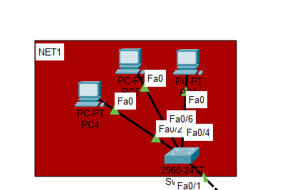
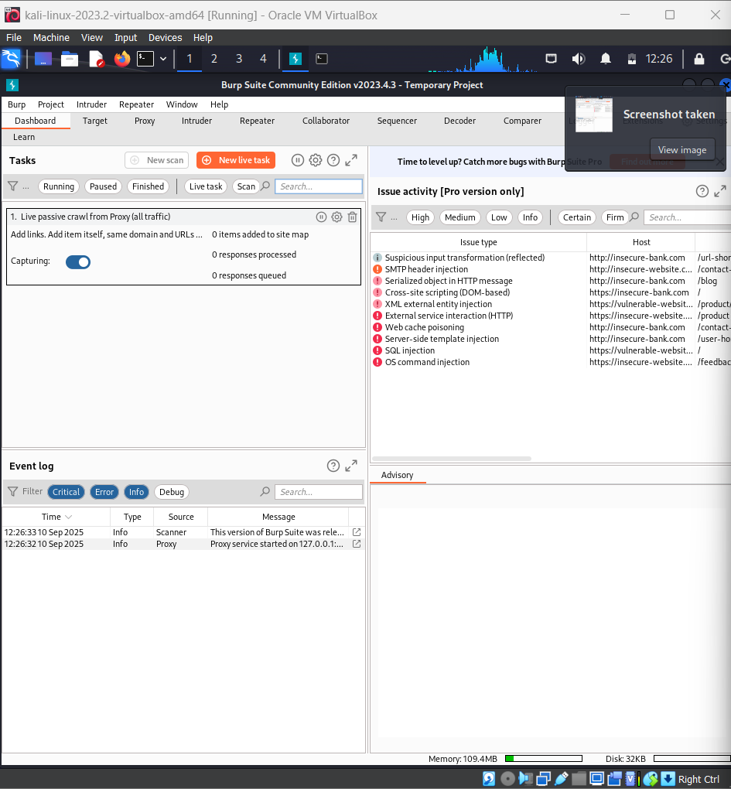
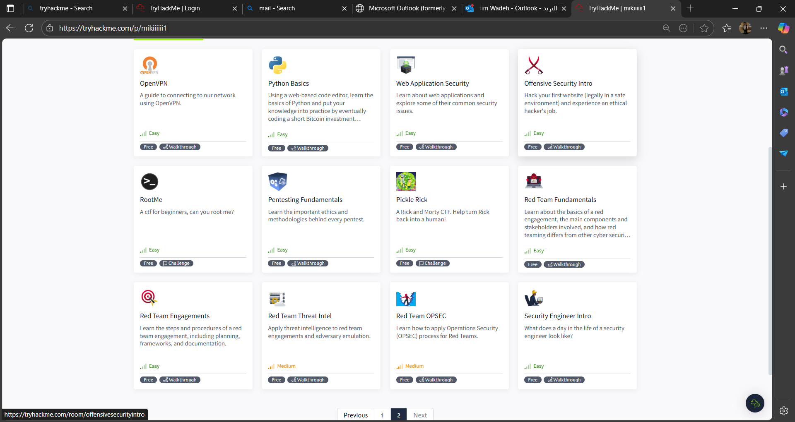

Introduction
A cybersecurity student passionate about protecting systems and solving security challenges. My journey began with a keen interest in network infrastructure. This curiosity evolved into a specialization in penetration testing, and further developing skills in advanced red teaming strategies.
Educational Background
-
Arab Open University, Egypt
B.Sc. in Cybersecurity & Networking (2023-2027) -
DEPI
Cybersecurity Diploma in Network Security (2025-2026)- Technical vendor: Fortinet
- Business skills: Eyoth
Skills
Soft Skills
- Problem Solving
- Teamwork
Technical Skills
- Penetration Testing
- Red Teaming
- Network Security
- SIEM Tools
Experiences
-
CyberTalents CTF
Team 23, Cohort 6 & 7 (2024) -
Hands-on Labs
TryHackMe, HackTheBox (2022-2025) -
University Projects
Network defense projects (2023-present)
Projects
Medium-size Network Design
Utilizing Cisco Packet Tracer for robust network architecture.
Web Application Pentesting Labs
Using tools like Burp Suite and ZAP for comprehensive testing.
Capture The Flag (CTF) Challenges
Over 20 challenges completed on platforms like TryHackMe and HackTheBox.
Offered Services
Security Awareness Training
Educate employees and students on best practices to recognize and prevent cyber threats through interactive workshops and phishing simulations.
Penetration Testing & Vulnerability Assessment
Identify and exploit security weaknesses in systems, networks, and applications through controlled testing.
Network Defense Setup
Design and implement secure network architectures with firewalls, IDS/IPS, and segmentation. Deploy monitoring tools for real-time threat detection.
Let's Work Together
Thank you for your time! I look forward to connecting and discussing how my skills can contribute to your team.